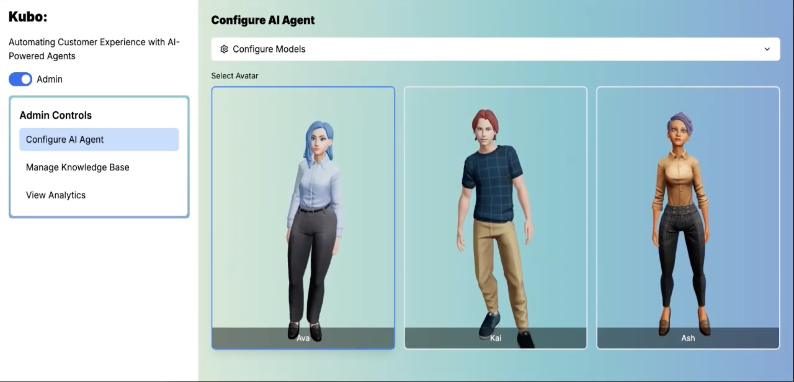

The Opportunity
AI Can Answer Questions. Can It Resolve Problems?
Customer support often breaks down when the solution depends on a specific product, configuration, or technical detail. Users may know what is wrong without knowing how to describe it, while conventional support experiences require them to search documentation, navigate troubleshooting flows, or repeat information to support agents. The opportunity was to move beyond conversational AI that simply responds to prompts toward context-aware assistance that helps users progress toward a resolution.
Market signals
Industry research reinforced the relevance of this direction. The findings suggested a product opportunity at the intersection of self-service, contextual understanding, and personalized guidance which informed the problem framing.
- 61% of customers prefer self-service for resolving simple issues
- 82% of service professionals say customer expectations are higher than they used to be, based on a survey of 6,500 service professionals.
- Lack of contextual knowledge was identified as a leading concern in Salesforce's research on generative AI for customer service.
- Sources: Salesforce Customer Service Statistics; Salesforce AI in Customer Service
Problem Framing
Identifying the Missing Context
Framed the problem around a gap between a user's actual situation and the information available to an AI support system
- User problem: When troubleshooting a product, users may struggle to identify the relevant model, explain the issue accurately, or locate the right instructions.
- Existing friction: Text-based queries depend on the user's ability to describe the problem, while generic responses can miss product-specific requirements.
- Opportunity hypothesis: Combining visual input, natural conversation, and product-specific documentation could reduce the effort required to obtain relevant guidance.
Jobs to Be Done
When I encounter a technical issue I cannot easily describe, help me show the problem and receive guidance relevant to my exact product, so I can make progress without repeatedly searching for answers.This reframed the experience around the user's desired outcome rather than a feature checklist.
Product Strategy
Context Before Conversation
KUBO was conceived as a customizable AI companion that combines real-time voice interaction, visual understanding, and retrieval-augmented generation. The product thesis was that a more natural interface alone would not differentiate the experience. Its value would come from connecting the user's situation to the right knowledge and translating that context into actionable guidance.
Three strategic pillars
- Reduce the effort of explaining a problem : Enable users to speak naturally and show the object or situation through a camera, rather than relying exclusively on text prompts and technical terminology.
- Ground responses in product-specific knowledge: Use RAG to retrieve relevant information from manuals, documentation, and other approved knowledge sources before generating a response.
- Design for operational improvement: Give administrators tools to configure the assistant, maintain its knowledge base, and review interaction analytics to identify gaps in answer quality and coverage.
Together, these pillars connect the end-user experience with the operational capabilities needed to maintain a useful support product.
Prioritization
Optimize for Resolution, Not Novelty
In a hackathon setting, building every possible AI capability would have diluted the core proposition. Prioritized the product roadmap around the riskiest assumptions: whether KUBO can understand the user's context, retrieve relevant evidence, and deliver guidance quickly enough to be useful.
| Priority | Capability | Product rationale |
|---|---|---|
| P0 | Knowledge-grounded answers | Establish relevance and reduce unsupported responses |
| P0 | Voice interaction | Reduce the effort of describing problems |
| P0 | Visual context | Help identify products and visible issues |
| P1 | Admin knowledge management | Keep support content maintainable and current |
| P1 | Interaction analytics | Surface retrieval gaps and recurring failure patterns |
| P2 | Emotion-aware responses | Explore adaptive assistance after core reliability is established |
| P2 | Custom avatars and multilingual voices | Expand personalization and accessibility |
Product Experience & System Design
KUBO connected two complementary product experiences. The product's differentiator was not any single model. It was the orchestration of these capabilities into one coherent support experience.
User experience
- Real-time conversational support through voice and camera input
- Visual recognition to help interpret the user's context
- Retrieval-grounded responses informed by a centralized knowledge base
- An interactive 3D avatar for a more natural assistance experience
Administrator experience
- Configurable assistant personality and model settings
- Centralized management of manuals, documents, and other knowledge sources
- Interaction analytics to review usage, feedback, and potential quality issues
From user input to contextual guidance
- Capture: The user describes an issue through speech or visual input.
- Interpret: Speech recognition and visual models help establish context.
- Retrieve: RAG searches the knowledge base for relevant supporting information.
- Respond: The language model generates a contextual response, delivered through speech and the interactive avatar.
- Evaluate: Interaction data can inform future improvements to retrieval quality and support coverage.
Proposed Success Metrics
| Product objective | Proposed metric | What it reveals |
|---|---|---|
| Improve resolution | Task resolution rate | Whether users reach a correct solution |
| Reduce user effort | Time to resolution | How quickly users complete a troubleshooting task |
| Improve answer quality | Grounded answer accuracy | Whether responses are supported by relevant documentation |
| Reduce friction | Repeat-query rate | Whether users must repeatedly clarify or rephrase |
| Build trust | CSAT after resolution | How users evaluate the completed support experience |
| Improve coverage | Successful retrieval rate | Whether relevant documentation can be found for supported issues |